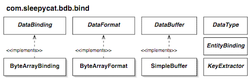

- Berkeley DB Reference Guide:
- Java API


|
|

Data formats determine how keys and values are represented as stored data (byte arrays) in the database. Data bindings determine how stored data is converted to and from Java objects.
The selection of data formats and bindings is, in general, independent of the selection of access methods and collection views. In other words, any format and binding can be used with any access method or collection, with one exception described under Record Numbers.
Note: In this document formats and bindings are described in the context of their use for stored data in a database. However, formats and bindings may also be used independently of a database. Using the SimpleBuffer class, bindings may be used to operate on an arbitrary byte array. This allows using bindings when data is to be written to a file or sent over a network, for example. The com.sleepycat.bdb.bind package has no dependencies on the com.sleepycat.bdb package.
For the key and value of each data store, and for the key of each data index, you may select one of the following formats.
| Format | Ordered | Description |
|---|---|---|
| SerialFormat | No | The data is stored using a compact form of Java serialization, where the class descriptions are stored separately in a catalog data store. Arbitrary Java objects are supported. |
| TupleFormat | Yes | The data is stored using a series of fixed length primitive values or zero terminated character arrays (strings). Class/type evolution is not supported. |
| RecordNumberFormat | Yes | The data is a 32-bit integer stored in a platform-dependent format. |
| Custom format | User-defined | The data storage format and ordering is determined by the custom implementation. |
As shown in the table above, the tuple format supports ordering while the serial format does not. This means that tuples should be used instead of serial data for keys in an ordered database.
The tuple format uses less space and its bindings execute faster than the serial format. But once a tuple is written to a database, the order of fields in the tuple may not be changed and fields may not be deleted. The only type evolution allowed is the addition of fields at the end of the tuple, and this must be explicitly supported by the bindings.
The serial format supports the full generality of Java serialization including type evolution. But serialized data can only be accessed by Java applications, its size is larger, and its bindings are slower to execute.
Any use of an access method with record number keys, and therefore any use of a stored List view, requires using RecordNumberFormat for the key format. Since Berkeley DB stores record number keys using a platform-dependent byte order, RecordNumberFormat is needed to store record numbers properly. RecordNumberBinding should also normally be used, although it is possible to implement your own binding for record numbers. See logical record numbers for more information on Berkeley DB record numbers.
Warning: You may not use RecordNumberFormat except with record number keys, as determined by the access method. Using RecordNumberFormat in other cases will create a database that is not portable between platforms. Java API will throw an IllegalArgumentException in such cases, when constructing the DataStore or DataIndex .
To create a custom format, simply provide a class that implements the DataFormat interface, and then create bindings that use this format. The Java API imposes no restrictions on data formats. It is up to the application to ensure that formats are platform-independent when portability is a requirement.
Data formats are objects which implement the DataFormat interface, which is a tag interface with no methods. Format objects are used primarily to identify a format, not to operate on the data. Bindings, which are described later, operate on the data.
To create a format, construct a format class such as SerialFormat or TupleFormat . Format objects are specified when creating bindings, stores and indices.
An application should create a format for each unique data representation. The Java API can then perform checks to ensure that stores, indices, bindings and key extractors all use formats consistently. This can help uncover bugs before data is written to the database.
Formats are determined to be equal by calling their equals() method, not by comparing their classes. This allows an application to create two tuple formats of the same class, for example, for a Part number and a Supplier number. Even though the physical format of the keys in this case may be the same, they are considered to be two distinct formats.
For example, an application may create two data stores, Parts and Suppliers, specifying two different tuple formats for their keys, and two different serial formats for their values. When bindings are created for these, specific formats are associated with each binding. When creating a data store or data index, specific formats are also specified. The Java API compares data formats that should be equal and throws IllegalArgumentException when they are not equal. For example, the key format of a data store must be equal to the key format of a binding used with that date store.
There are two types of binding interfaces. Simple data bindings implement the DataBinding interface and can be used for key or value objects. Entity bindings implement the EntityBinding interface and are used for combined key and value objects called entities.
Simple data bindings map between the key or value data stored by Berkeley DB and a key or value object. This is a simple one-to-one mapping and a single data format is used for each binding.
Simple data bindings are easy to implement and in some cases require no coding. For example, a SerialBinding can be used for keys or values without writing any additional code.
Entity bindings must divide an entity object into its key and value data, and then combine the key and value data to re-create the entity object. This is a two-to-one mapping and two data formats are used for each binding.
Entity bindings are useful when a stored application object naturally has its primary key as a property, which is very common. For example, an Employee object would naturally have an EmployeeNumber property (its primary key) and an entity binding would then be needed. Of course, entity bindings are more complex to implement, especially because their key and data formats may be different.
Note that even when an entity binding is used a key binding is also usually needed. The key binding is used, for example, to define key objects that are passed to the Map.get() method. A key object is passed to this method even though it may return an entity that also contains the key.
There are two ways to implement bindings. The first way is to create a binding class that implements one of the two binding interfaces, DataBinding or EntityBinding . For each built-in data format there are a number of abstract classes that make this easier. For example, you can extend TupleBinding to implement a simple binding for a tuple key or value. Abstract classes are also provided for entity bindings and are named after the format names of the key and value. For example, you can extend TupleSerialBinding to implement an entity binding with a tuple key and serial value.
Another way to implement bindings is with marshalling interfaces. These are interfaces which perform the binding operations and are implemented by the key, value or entity classes themselves. With marshalling you use a binding which calls the marshalling interface and you implement the marshalling interface for each key, value or entity class. For example, you can use TupleMarshalledBinding along with key or value classes that implement the MarshalledTupleData interface.
Bindings are specified whenever a stored collection is created. A key binding must be specified for map, key set and entry set views. A value binding or entity binding must be specified for map, list, value set and entry set views.
Any number of bindings may be created for the same stored data. This allows multiple views over the same data. For example, a tuple might be bound to an array of values or to a class with properties for each object.
It is important to be careful of bindings that only use a subset of the stored data. This can be useful to simplify a view or to hide information that should not be accessible. However, if you write information using these bindings you may create stored data that is invalid from the application's point of view. It is up to the application to guard against this by creating a read-only collection when such bindings are used.
Key extractors are needed whenever database indices are used. For each database index ( DataIndex ) or ForeignKeyIndex a key extractor is used to derive index key data from key/value data. Key extractors are objects whose classes implement the KeyExtractor interface.
Like bindings, key extractors may be implemented using a separate key extractor class or using a marshalling interface. Abstract key extractor classes and marshalling interfaces are provided in the com.sleepycat.bdb.bind.tuple and com.sleepycat.bdb.bind.serial packages.
Unlike bindings, key extractors fundamentally operate on key and value data, not necessarily on the objects derived from data by bindings. In this sense key extractors are a part of a database definition, and may be independent of the various bindings that may be used to view data in a database. However, key extractors are not prohibited from using higher level objects produced by bindings, and doing so may be convenient for some applications. For example, marshalling interfaces, which are defined for objects produced by bindings, are a convenient way to define key extractors.
|
|
Copyright (c) 1996-2003 Sleepycat Software, Inc. - All rights reserved.